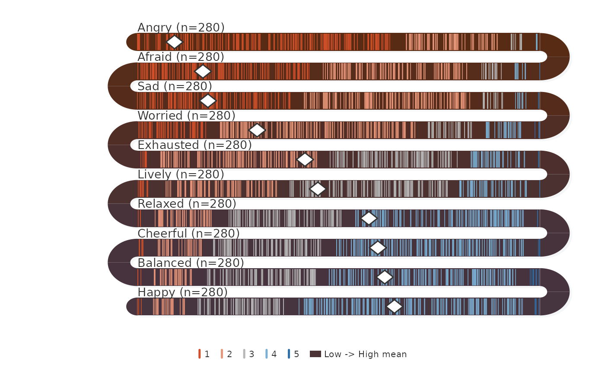
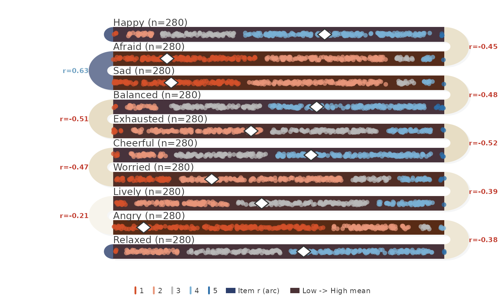
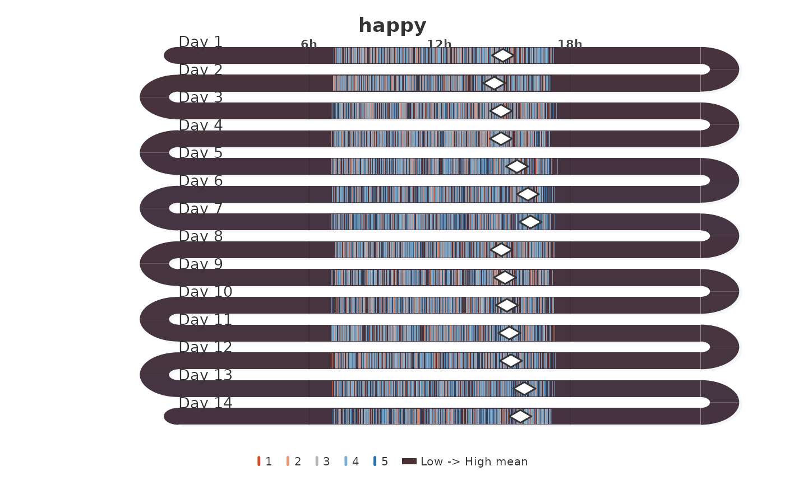
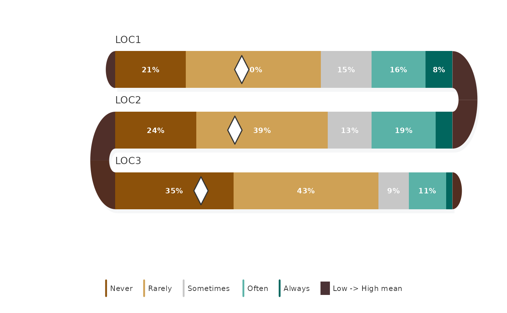
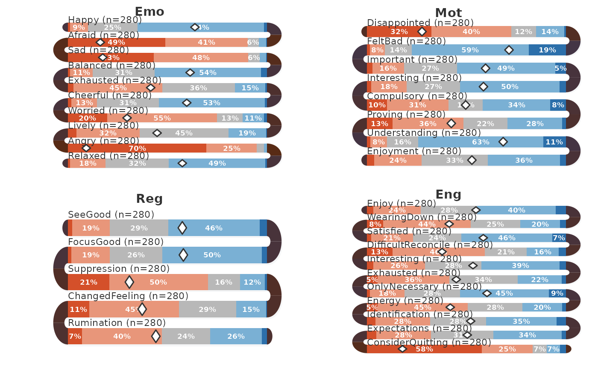

survey_snake() draws a survey snake plot, which shows the distribution of
responses to a set of rating items, one band per item, with consecutive
items joined by U-turns so that a long instrument fits in one panel in its
item order. Each band shows every response as a tick placed in the zone of
its response level, the item mean as a diamond, and a shade running from
warm (low mean) to cool (high mean). The display shows how responses are
spread on each item and how the items compare.
The function accepts raw responses (one row per respondent, one column
per item), a table of counts (one row per item, one column per response
level), or experience-sampling data in long format, where var and day
make each day a band and timestamp places each response at its time of
day. Responses can be drawn as lines, jittered dots, or a stacked bar with
percentages. The U-turns can carry the Pearson correlation between the two
items they join (arc_fill = "correlation"); this needs raw responses,
because a table of counts does not record which respondent gave which
answer. With facet, groups of items are drawn as separate panels. It
returns the layout invisibly as a snake_layout object, or a list of them
with facet.
For a compact 100% stacked bar per item use survey_sequence(), or
sequential_dist() for scales without a neutral midpoint. Palettes for
the response levels are given by snake_palette().
Usage
survey_snake(
counts,
labels = NULL,
levels = NULL,
var = NULL,
day = NULL,
timestamp = NULL,
level_labels = NULL,
band_height = 28,
band_gap = 18,
plot_width = 500,
tick_shape = c("line", "dot", "bar"),
bar_reverse = FALSE,
tick_opacity = 0.75,
level_gap = 15,
color_mode = c("level", "individual"),
colors = NULL,
shade_band = TRUE,
show_mean = TRUE,
show_median = FALSE,
show_correlation = TRUE,
jitter_range = 0.22,
sort_by = c("none", "mean", "net"),
shadow = TRUE,
label_color = "#333333",
label_size = 0.85,
label_align = "left",
show_legend = TRUE,
legend_text_size = 0.65,
arc_color = "#2c3e6b",
arc_opacity = 0.8,
arc_fill = c("none", "correlation", "mean_prev", "blend"),
band_palette = NULL,
start_from = c("left", "right"),
flow = c("snake", "natural"),
facet = FALSE,
facet_ncol = 2L,
title = NULL,
margin = c(top = 30, right = 10, bottom = 55, left = 100),
background = "white",
seed = 42L
)Arguments
- counts
Responses, in one of four forms:
a data frame of raw responses, one row per respondent and one column per item;
a numeric matrix of counts, items in rows and response levels in columns;
a data frame of counts, converted to a matrix;
a long data frame of experience-sampling responses, used with
varandday.
A data frame is read as raw responses when its columns hold few distinct whole-number or categorical values relative to its number of rows, and as counts otherwise.
- labels
Item labels, one per item.
NULL(default) uses the row names of a count table, or, for raw responses, the column names with the number of responses.- levels
Response levels in scale order.
NULL(default) uses the column names of a count table, or, for raw responses, the factor levels or the sorted distinct values. For raw responses the levels must match the values in the data; uselevel_labelsto relabel them.- var, day, timestamp
Column names for experience-sampling data in long format: the response variable, the day (or other period) that defines each band, and optionally a POSIXct timestamp that places each response at its time of day. Bands are labelled
"Day 1","Day 2", and so on, andtitledefaults tovar.- level_labels
Display labels for the response levels: a vector named by level, such as
c("1" = "Never", "5" = "Always"), or an unnamed vector with one label per level.- band_height, band_gap
Height of each band and gap between bands, in plot units (defaults 28 and 18).
- plot_width
Length of each band in plot units (default 500).
- tick_shape
"line"(default),"dot"(jittered points) or"bar"(a stacked bar with percentages).- bar_reverse
For
tick_shape = "bar", draw the highest level first (defaultFALSE).- tick_opacity
Opacity of the ticks, between 0 and 1 (default 0.75).
- level_gap
Gap, in plot units, between the zones of adjacent response levels (default 15; 0 for none).
- color_mode
"level"(default) colors each tick by its response level;"individual"gives every tick its own hue.- colors
One color per response level, in scale order. Only the first
length(levels)colors are used, so passsnake_palette(name, n = <number of levels>).NULL(default) uses a red-to-blue diverging palette.- shade_band
Has no effect at present: the band is always shaded by the item mean.
- show_mean
Draw a diamond at the item mean (default
TRUE).- show_median
Draw a dashed line at the item median (default
FALSE).- show_correlation
With
arc_fill = "correlation", print the correlation at each U-turn (defaultTRUE).- jitter_range
For
tick_shape = "dot", vertical scatter of the points as a fraction of half the band height (default 0.22).- sort_by
Order of the items:
"none"(default, input order),"mean"(increasing item mean) or"net"(increasing share of responses above the middle level minus share below; the mean for scales with fewer than four levels).- shadow
Draw drop shadows (default
TRUE).- label_color, label_size
Color and size multiplier of the item labels (defaults
"#333333"and 0.85).- label_align
Alignment of the item labels:
"left"(default),"right", or"direction"to follow each band's reading direction.- show_legend
Draw the legend (default
TRUE).- legend_text_size
Size of the legend text (default 0.65).
- arc_color
Color of the U-turns for a positive correlation when
arc_fill = "correlation"; a negative correlation uses its complement (default"#2c3e6b").- arc_opacity
Opacity of the U-turns for
arc_fill = "mean_prev"and"blend", and of U-turns without a correlation (default 0.80).- arc_fill
Fill of the U-turns:
"none"(default) continues the shades of the two bands it joins;"correlation"tints it by the Pearson correlation between the two items, darker for a larger absolute value;"mean_prev"uses the shade of the preceding item;"blend"mixes the two shades.- band_palette
Two or more colors for the band shade, from low to high item mean.
NULL(default) uses a dark brown-to-slate ramp.- start_from
Side on which the first band starts:
"left"(default) or"right".- flow
"snake"(default): bands alternate direction."natural": every band reads in the same direction.- facet
FALSE(default) for one panel.TRUEgroups the columns of raw responses by name prefix (LOC1,LOC2becomeLOC;Emo_HappybecomesEmo) and draws one panel per group, with the prefix removed from the item labels and one shared legend in a spare panel. A named list of column-name vectors gives the groups explicitly.- facet_ncol
Number of panel columns for
facet(default 2).- title
Plot title, or
NULL(default) for none.- margin
Named numeric vector of
top,right,bottomandleftmargins in plot units (defaultc(top = 30, right = 10, bottom = 55, left = 100)).- background
Background color (default
"white").- seed
Seed for the random placement of ticks within their zones (default 42), so the same call draws the same plot. The session's random number state is restored when the function returns.
Value
The plot is drawn on the current device. The function returns,
invisibly, an object of class snake_layout: a list describing the drawn
geometry, with bands (a data frame with one row per item band and
columns i, y_center, y_top, y_bottom, x_left, x_right,
direction and read_direction), arcs (a list with one element per
U-turn), canvas and plot_area (dimensions in plot units),
orientation, flow and params (the sizes used).
With arc_fill = "correlation" the list also holds correlations, a
data frame with one row per U-turn and columns from and to (the item
names), r (the Pearson correlation over the respondents who answered
both items; NA when fewer than three did or either item is constant
among them) and n (the number of those respondents). With other
arc_fill values the list has no correlations component.
as.data.frame() returns these tables.
With facet, a named list of such objects, one per panel.
Conditions
An error of class snakeplot_no_respondent_data when
arc_fill = "correlation" and counts is a table of counts or var
and day are given.
See also
as.data.frame.snake_layout() for the tables of the returned
layout; survey_sequence() and sequential_dist() for stacked bars;
snake_palette() for level colors; ema_emotions, student_survey and
ema_beeps for example data.
Examples
# Raw responses: 280 students, ten emotion items rated 1-5
survey_snake(ema_emotions, sort_by = "mean")

# Correlations between adjacent items on the U-turns
survey_snake(ema_emotions, arc_fill = "correlation", tick_shape = "dot")

# Experience sampling: one band per study day, responses at their time
survey_snake(ema_beeps, var = "happy", day = "day",
timestamp = "start_time")

# A table of counts with named levels
counts <- matrix(c(110, 210, 79, 84, 42,
126, 205, 68, 100, 26,
184, 226, 47, 58, 10),
nrow = 3, byrow = TRUE,
dimnames = list(c("LOC1", "LOC2", "LOC3"),
c("Never", "Rarely", "Sometimes",
"Often", "Always")))
survey_snake(counts, tick_shape = "bar",
colors = snake_palette("earth", n = 5))

# One panel per group of items
survey_snake(student_survey, facet = TRUE, tick_shape = "bar")
